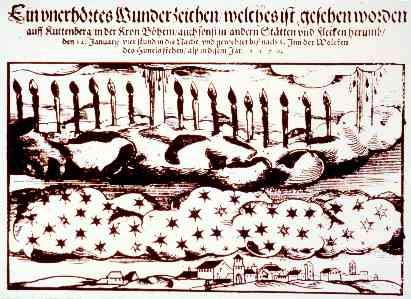

Gravure de ce qui semble être une aurore
boréale cette année-là a Kuttenber Ein unerhörtes Wunderzeichen / welches ist gesehen worden auff Kuttenberg / in der Kron Böhem / auch sonst in andern Stätten und Flecken herumb / den 12. Januarij / vier stund in die Nacht / und gewehret biss nach S. Jun der Wolcken des Himels stehen / alss in disem Jar. 1570. Nuremberg (GM-HB. 788) < Deliyannis, Y.: Courrier au webmestre, 11 février 2008.

Janvier
À Kuttenberg (Bohémie) torches dans le ciel pendant près de 4 h
Probablement une aurore boréale Hellman, 1921, p. 17, 63 < Silverman, Sam: "Auroral Annotations".
A Tundtorff(?), observation de ce qui semble être une aurore boréale calme Hellman, 1921, p. 64 < Silverman, Sam: "Auroral Annotations".
Mars
A Tundtorff(?), observation de ce qui semble être une aurore boréale calme Hellman, 1921, p. 64 < Silverman, Sam: "Auroral Annotations".
A Kuttenberg, Bohemia, observation de ce qui semble être une aurore boréaleHellman, 1921, p. 17, 64 < Silverman, Sam: "Auroral Annotations".
En Allemagne, figures effrayantes vues dans le ciel. Une gravure montre une couronne auroralePartie de pamphlet 2 sur l'événement du 14 juin 1570 < Hellman, 1921, p. 64 < Silverman, Sam: "Auroral Annotations".